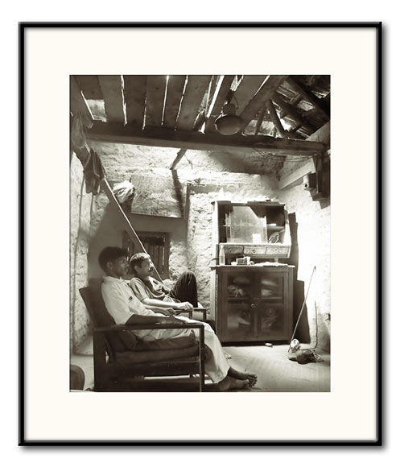
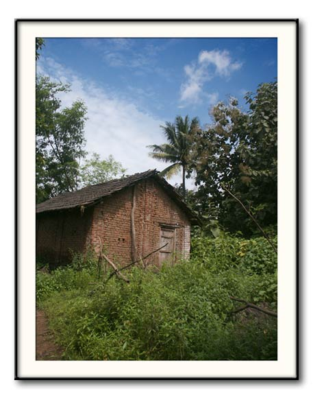
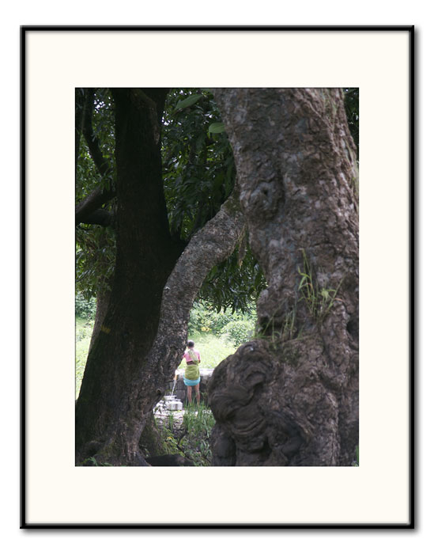
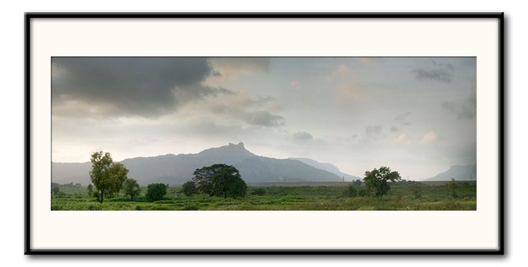
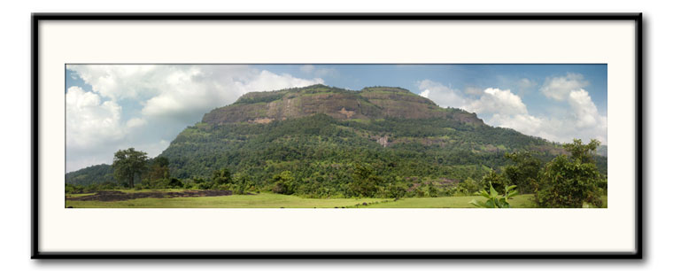
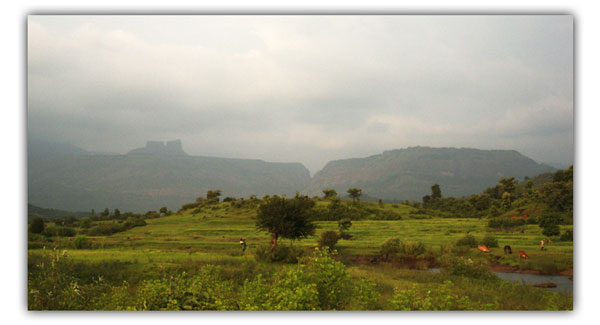

Trekkers Home | Next
1998 - 2004 © Abhijit Rao
|  |
Bacchu's Hall Minolta DImage S414, 2272x1704 fine JPEG, ISO 64, 2 sec, tripod, platinum tone |
|  |
House Minolta DImage S414, 2272x1704 fine JPEG, ISO 64 |
A village house. It paints a romantic picture with the framing greenary. But the bare brickwork is a regular feature as people cannot afford cement. Many times the walls are plastered with mud. |
|  |
Water Minolta DImage S414, 2272x1704 fine JPEG, ISO 200 |
A village woman drawing water from the well. |
|  |
Irshal Minolta DImage S414, 2272x1704 (x8) fine JPEG, ISO 64, ~120mm |
This panorama is taken from a small clearing just off the turnoff to Matheran on the NH4. I and Amey took a quick break as we did not want to miss on the glorious evening sunlight. Irshal with it's famous nedha looks serene surrounded by lush meadows and rolling landscape. This is the beauty of the monsoons. |
|  |
Sudhagad Minolta DImage S414, 2272x1704 (x8) fine JPEG, ISO 64, ~40mm, tripod |
Sudhagad. A cloudy morning gave way to a fantastic day. A fitting day for a race to climb and get back (in one piece) from this formidable gad. The shortest time was 1hr 6min 2sec. The longest took more than 3hr 30mins! But all enjoyed. |
|  |
Tailbaila and Sudhagad Minolta DImage S414, 2272x1704 fine JPEG, ISO 64 |
On our way back from Paschyapur. The rear tyre of our bike was punctured. We had to push it well neigh 5km. We took turns pushing or travelling Bacchu's rickshaw. |
Note: On an aside, Bacchu' is a bachelor and this is evident from the arbitrarily angled tiger photo, the cobwebs and the disused cupboard. Seen here are Kaka and Chandrakant Whaghmare who came second in the Sudhagad cross country. He ran bare foot and finished 1hr 6min 42sec -- just 40sec behind the first.